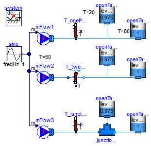
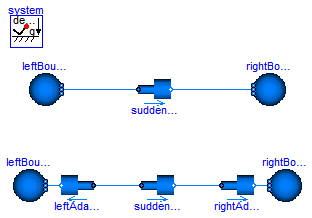

| Name | Description |
|---|---|
| Differences between using one port with and without explicit junction model and two port sensors for fluid temperature meassuring | |
| Illustrating a case in which kinetic terms play a major role in the momentum balance |
 Modelica.Fluid.Examples.Explanatory.MeasuringTemperature
Modelica.Fluid.Examples.Explanatory.MeasuringTemperature
This model demonstrates the differences that occur when using one- and two-port temperature sensors with and without explicit junction models. As shown in the next figure, the same system is shown in 3 different variations. In all cases exactly the same fluid system is defined. The only difference is how the temperature is measured:
A pre-defined mass flow rate is present so that fluid flows from the reservoir to the tanks and after 0.5 s the mass flows from the tanks to the reservoir. The reservoir has a temperature of 500C whereas the tanks have an initial temperatur of 200C and of 800C. The initial height of the tanks is made in such a form that fluid always flows out of the cold tank. When the fluid flows from the reservoir to the tanks, then it mixes with the cold tank and enters the hot tank. When the fluid flow from the tanks to the reservoir, then the cold and hot water from the two tanks first mixes and the flows to the reservoir.
A one-port sensor measures the mixing temperature at a connection point. Therefore T_onePort.T (the blue curve in the figure below) is the temperature of the mixing point. A two-port sensor measures the temperature at the upstream side. Therefore T_twoPort.T (the red curve in the figure below which is identical to the green curve) shows first the temperature of the reservoir and then the mixing temperature when fluid flows from the tanks to the reservoir. The same is measured with T_junction.T (the green curve below), because the one-port sensor is connected between the mass flow source and the junction and since the mixing takes place in the junction, the same situation is present as for T_twoPort.T.
Extends from Modelica.Icons.Example (Icon for runnable examples).
model MeasuringTemperature "Differences between using one port with and without explicit junction model and two port sensors for fluid temperature meassuring" extends Modelica.Icons.Example;Modelica.Fluid.Sensors.Temperature T_onePort(redeclare package Medium = Modelica.Media.Water.StandardWater); Modelica.Fluid.Sensors.TemperatureTwoPort T_twoPort(redeclare package Medium = Modelica.Media.Water.StandardWater); inner Modelica.Fluid.System system(energyDynamics=Modelica.Fluid.Types.Dynamics.FixedInitial); Modelica.Fluid.Vessels.OpenTank openTankCold2(nPorts=1, redeclare package Medium = Modelica.Media.Water.StandardWater, height=2, crossArea=2, portsData={Modelica.Fluid.Vessels.BaseClasses.VesselPortsData(diameter=0.05)}, level_start=0.975, T_start=293.15); Modelica.Fluid.Vessels.OpenTank openTankCold1( redeclare package Medium = Modelica.Media.Water.StandardWater, height=2, crossArea=2, portsData={Modelica.Fluid.Vessels.BaseClasses.VesselPortsData(diameter=0.05)}, nPorts=1, level_start=0.975, T_start=293.15); Modelica.Fluid.Vessels.OpenTank openTankHot1(nPorts=1, level_start=1, redeclare package Medium = Modelica.Media.Water.StandardWater, height=2, crossArea=2, portsData={Modelica.Fluid.Vessels.BaseClasses.VesselPortsData(diameter=0.05)}, T_start=353.15); Modelica.Fluid.Vessels.OpenTank openTankHot2(nPorts=1, level_start=1, redeclare package Medium = Modelica.Media.Water.StandardWater, height=2, crossArea=2, portsData={Modelica.Fluid.Vessels.BaseClasses.VesselPortsData(diameter=0.05)}, T_start=353.15); Modelica.Fluid.Sources.MassFlowSource_T mFlow1( nPorts=1, redeclare package Medium = Modelica.Media.Water.StandardWater, use_m_flow_in=true, use_T_in=false, T=323.15); Modelica.Fluid.Sources.MassFlowSource_T mFlow2( nPorts=1, redeclare package Medium = Modelica.Media.Water.StandardWater, use_m_flow_in=true, T=323.15); Modelica.Blocks.Sources.Sine sine(freqHz=1); Modelica.Fluid.Sensors.Temperature T_junction(redeclare package Medium = Modelica.Media.Water.StandardWater); Modelica.Fluid.Vessels.OpenTank openTankCold3(nPorts=1, redeclare package Medium = Modelica.Media.Water.StandardWater, height=2, crossArea=2, portsData={Modelica.Fluid.Vessels.BaseClasses.VesselPortsData(diameter=0.05)}, level_start=0.975, T_start=293.15); Modelica.Fluid.Vessels.OpenTank openTankHot3(nPorts=1, level_start=1, redeclare package Medium = Modelica.Media.Water.StandardWater, height=2, crossArea=2, portsData={Modelica.Fluid.Vessels.BaseClasses.VesselPortsData(diameter=0.05)}, T_start=353.15); Modelica.Fluid.Sources.MassFlowSource_T mFlow3( nPorts=1, redeclare package Medium = Modelica.Media.Water.StandardWater, use_m_flow_in=true, T=323.15); Modelica.Fluid.Fittings.TeeJunctionIdeal junctionIdeal( redeclare package Medium = Modelica.Media.Water.StandardWater); equationconnect(mFlow2.ports[1], T_twoPort.port_a); connect(mFlow1.ports[1], T_onePort.port); connect(sine.y, mFlow1.m_flow_in); connect(sine.y, mFlow2.m_flow_in); connect(mFlow3.ports[1], T_junction.port); connect(sine.y, mFlow3.m_flow_in); connect(T_junction.port, junctionIdeal.port_1); connect(T_twoPort.port_b, openTankCold2.ports[1]); connect(T_onePort.port, openTankHot1.ports[1]); connect(T_twoPort.port_b, openTankHot2.ports[1]); connect(junctionIdeal.port_3, openTankCold3.ports[1]); connect(junctionIdeal.port_2, openTankHot3.ports[1]); connect(T_onePort.port, openTankCold1.ports[1]); end MeasuringTemperature;
Modelica.Fluid.Examples.Explanatory.MomentumBalanceFittings
This example shows the use of a sudden expansion / contraction model, which is connected to two boundary conditions prescribing static pressure. Notice that the prescribed static pressure on the right boundary is higher than on the left one. Still, the fluid flows from left to right.
The reason for this is that the boundary conditions model infinite reservoirs with an infinite diameter and thus zero flow velocity. The sudden expansion model does however have two ends with finite diameters, and, as explained in the Overview of the Users' Guide, the momentum balance is not fulfilled exactly for this type of connections. Using a simple connect()-statement, the difference of the kinetic terms is neglected, which is not reasonable in the present model: At the left boundary condition it is zero, and on the left side of the sudden expansion it has a non-zero value. It is not reasonable to neglect it in the shown model, because there is little friction and therefore these kinetic effects dominate. Consequently, only modelling these effects explicitly leads to the correct results.
To do so, two additional sudden expansions / contractions are included in the model. The diameter is set to inf close to the boundaries and the proper values close to the original model. These additional components now introduce exact momentum balances and the results are as expected.
The total pressures offer an additional perspective on the model. After setting the parameter show_totalPressures on the Advanced tab of the AbruptAdaptors to true, the total pressures are included in said models and may be plotted. This allows to confirm that the total pressure always reduces along the flow direction, even in the upper model.
Extends from Modelica.Icons.Example (Icon for runnable examples).
model MomentumBalanceFittings "Illustrating a case in which kinetic terms play a major role in the momentum balance" extends Modelica.Icons.Example;Modelica.Fluid.Sources.Boundary_pT leftBoundary1( redeclare package Medium = Modelica.Media.Water.StandardWaterOnePhase, nPorts=1, p=100000); Modelica.Fluid.Sources.Boundary_pT rightBoundary1( redeclare package Medium = Modelica.Media.Water.StandardWaterOnePhase, nPorts=1, p=110000); Modelica.Fluid.Fittings.AbruptAdaptor suddenExpansion1( diameter_a=0.1, diameter_b=0.2, redeclare package Medium = Modelica.Media.Water.StandardWaterOnePhase, show_totalPressures=true, show_portVelocities=true); Modelica.Fluid.Sources.Boundary_pT leftBoundary2( redeclare package Medium = Modelica.Media.Water.StandardWaterOnePhase, nPorts=1, p=100000); Modelica.Fluid.Sources.Boundary_pT rightBoundary2( redeclare package Medium = Modelica.Media.Water.StandardWaterOnePhase, nPorts=1, p=110000); Modelica.Fluid.Fittings.AbruptAdaptor suddenExpansion2( diameter_a=0.1, diameter_b=0.2, redeclare package Medium = Modelica.Media.Water.StandardWaterOnePhase, show_totalPressures=true, show_portVelocities=true); Modelica.Fluid.Fittings.AbruptAdaptor leftAdaptor( diameter_a=0.1, redeclare package Medium = Modelica.Media.Water.StandardWaterOnePhase, diameter_b=Modelica.Constants.inf); Modelica.Fluid.Fittings.AbruptAdaptor rightAdaptor( redeclare package Medium = Modelica.Media.Water.StandardWaterOnePhase, diameter_a=0.2, diameter_b=Modelica.Constants.inf); inner System system; equationconnect(leftBoundary1.ports[1], suddenExpansion1.port_a); connect(suddenExpansion1.port_b, rightBoundary1.ports[1]); connect(leftAdaptor.port_b, leftBoundary2.ports[1]); connect(leftAdaptor.port_a, suddenExpansion2.port_a); connect(suddenExpansion2.port_b,rightAdaptor. port_a); connect(rightAdaptor.port_b, rightBoundary2.ports[1]); end MomentumBalanceFittings;